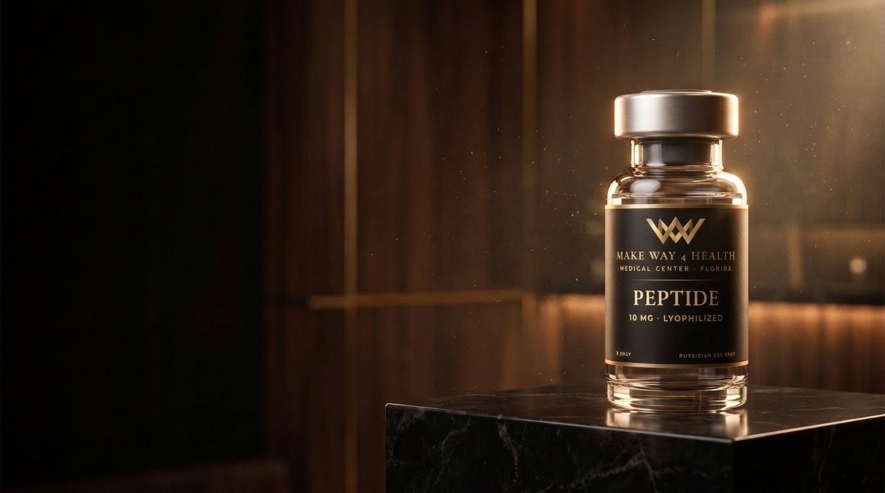
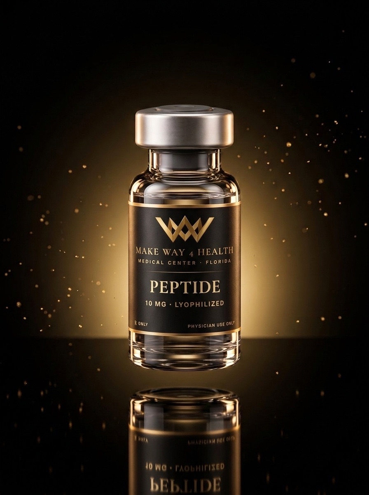
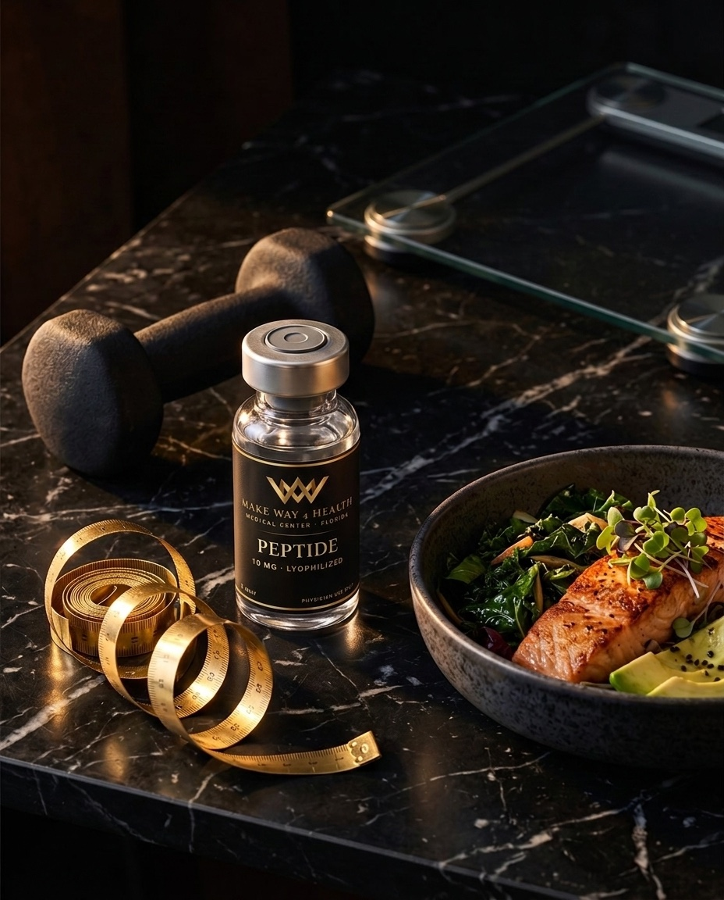

Medicina funcional y regenerativa · Doral, FL
Haces todo bien.
Tu cuerpo no responde.
Cuando la dieta y el gimnasio ya no bastan, la respuesta suele estar en tu metabolismo, tus hormonas o tu recuperación. Un protocolo médico personalizado, con seguimiento real, puede cambiar eso.
- Consulta médica
- Protocolo personalizado
- Sin pago en la web
¿Te identificas?
Señales de que tu cuerpo pide otra estrategia.
Toca las que vives hoy. No es un diagnóstico, es el punto de partida para una conversación con el equipo médico.
0 señales marcadas · Marca las que te representan.
Encontrar mi ruta →
Lo esencial en 30 segundos
¿Qué son los péptidos y por qué importan?
Son cadenas cortas de aminoácidos que tu cuerpo ya usa como mensajeros: regulan apetito, reparación de tejidos, sueño y producción hormonal. La medicina peptídica trabaja con esas mismas señales, siempre bajo indicación médica.
Mensajeros naturales
Actúan sobre procesos que tu cuerpo ya conoce, en lugar de tapar síntomas.
Precisión clínica
Cada opción y dosis se define tras evaluar tu historia, objetivos y contexto.
Parte de un sistema
Funcionan mejor junto a nutrición, entrenamiento, sueño y seguimiento.
“Puedo comprarlos en internet y usarlos por mi cuenta.” Realidad: sin evaluación no sabes si te convienen, qué dosis usar ni qué vigilar. Por eso aquí todo empieza con un profesional.
Test gratuito · 3 preguntas
Descubre tu ruta en 60 segundos.
Responde y te mostramos qué protocolo encaja mejor con tu objetivo, para llegar a la consulta con claridad.
Pregunta 1 de 3
¿Cuál es tu prioridad número uno?
¿Cuánto tiempo llevas intentándolo por tu cuenta?
¿Qué te ayudaría más ahora mismo?

El método MW4H
Tus objetivos guían el protocolo.
No vendemos un frasco. Conectamos tus objetivos, altura, peso, actividad y contexto de salud antes de que un profesional defina qué herramientas forman parte de tu plan.
Evaluar
Objetivos, historia y datos relevantes con el equipo clínico.
Diseñar
Un protocolo con nutrición, movimiento y terapia cuando hay indicación.
Ajustar
Controles y decisiones con contexto, semana a semana.
Cuatro rutas · Un mismo estándar
Elige el objetivo. Nosotros el camino.
La farmacoterapia se considera únicamente después de consulta, elegibilidad y prescripción médica. La disponibilidad se confirma al evaluar tu caso.
Por qué Make Way 4 Health
La diferencia está en el acompañamiento.
Catálogo clínico
Explora las presentaciones disponibles para evaluación.
Toda opción requiere consulta, prescripción médica y confirmación de disponibilidad al momento de atenderte.
0 presentaciones
No encontramos una presentación con esa búsqueda.
Comunidad MW4H
Historias compartidas en colaboración.
Pacientes, creadores y aliados muestran parte de su experiencia en publicaciones públicas. Cada pieza abre directamente en Instagram. @MakeWayHoldings
Las publicaciones reflejan experiencias individuales compartidas por sus autores. Los resultados varían y no garantizan el resultado de otra persona.
Embajadores de marca
Personas que comparten bienestar en comunidad.
Creadores, atletas y aliados que conectan sus comunidades con hábitos, movimiento y bienestar.
Liderazgo y dirección clínica
Personas reales detrás de cada protocolo.
La tecnología organiza el recorrido. La evaluación y las decisiones permanecen en manos de profesionales identificados.
Dr. Ariel Gallanosa, DO
Vice President & Medical Director
Alexander Jorge, APRN
Vice President · Nurse Practitioner
Identidad y credenciales
Información verificable, presentada con claridad.
Consulta el NPI de la organización, el permiso del establecimiento y las credenciales profesionales aportadas por el centro, junto con enlaces de verificación oficial.
Las capturas son informativas y pueden quedar desactualizadas. La fuente oficial es la referencia para confirmar el estado vigente.
Tu evaluación inicial.
Todo lo que necesitas para saber si un protocolo es para ti, antes de decidir nada.
- ✓Revisión de tus objetivos, medidas y contexto
- ✓Contacto del equipo por tu canal preferido
- ✓Consulta con un profesional licenciado
- ✓Ruta recomendada: nutrición, entrenamiento y terapia si hay indicación
- ✓Costo explicado con claridad antes de cualquier pago
Cero compromiso. Enviar tu solicitud no te obliga a comprar. Si el profesional determina que no eres candidato, te lo dirá con honestidad.
Así de simple
De tu objetivo a tu protocolo.
- 01
Elige tu objetivo
Peso, hormonas, recuperación, energía u otra prioridad.
- 02
Indica tu ubicación
La atención depende del lugar donde te encuentres.
- 03
Deja tus datos
Nombre, teléfono, email y canal preferido.
- 04
Te contactamos
Coordinamos tu consulta y el siguiente paso.
No incluyas diagnósticos ni documentos clínicos en el primer formulario.
Antes de decidir
Respuestas claras.
¿Te queda alguna duda? Escríbenos por WhatsApp y te orientamos sin pedirte información clínica sensible.
Preguntar por WhatsApp¿Cuánto cuesta un protocolo?
Depende de tus objetivos y de lo que el profesional indique. El costo se explica con claridad en la consulta, antes de cualquier pago. En la web no se cobra nada.
¿Es seguro?
Toda terapia requiere evaluación, prescripción y supervisión médica, y se gestiona conforme a las normas aplicables de AHCA, DOH, Board of Pharmacy y DEA. Si no eres candidato, el profesional te lo dirá.
¿Puedo comprar directamente desde el catálogo?
No. El catálogo permite expresar interés en una presentación. El equipo revisa tu caso, coordina la consulta y el profesional determina si existe indicación y prescripción.
¿Qué sucede después de enviar mis datos?
El equipo revisa tu objetivo y ubicación, te contacta por el canal elegido y coordina una evaluación más completa mediante el sistema clínico correspondiente.
¿Todos los pacientes necesitan laboratorios?
No necesariamente. El profesional determina qué información o pruebas son pertinentes según objetivos, antecedentes y protocolo considerado.
¿La atención puede ser virtual?
Puede utilizarse telesalud cuando el profesional y el centro estén autorizados para atenderte en el lugar donde te encuentras. Algunos servicios pueden requerir atención presencial.
Tu mejor versión empieza con una conversación
Cuéntanos qué quieres lograr.
Tu objetivo y ubicación son suficientes para que el equipo organice el siguiente paso.